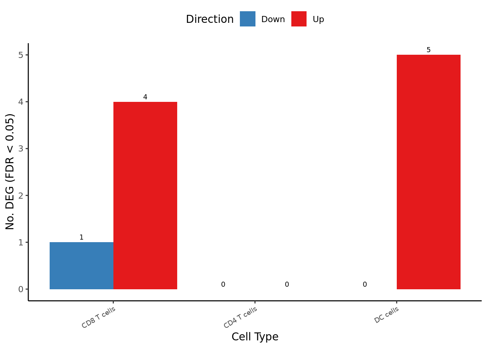
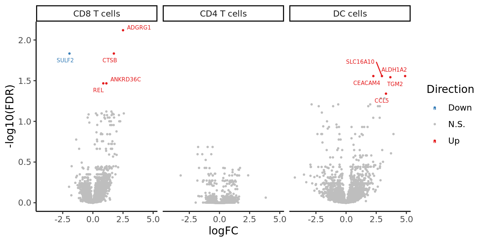
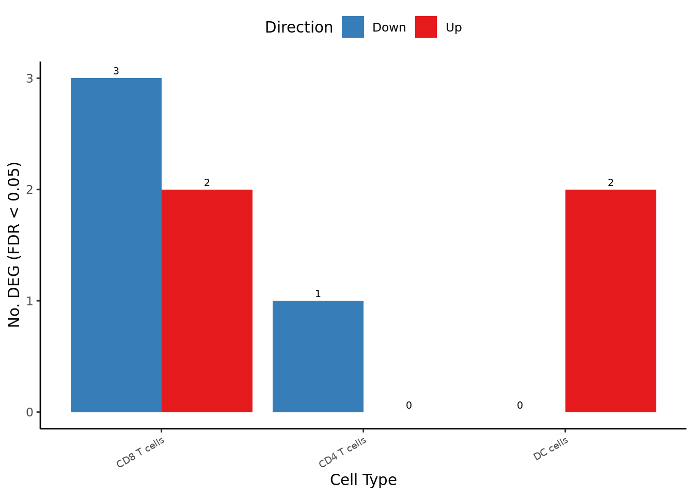
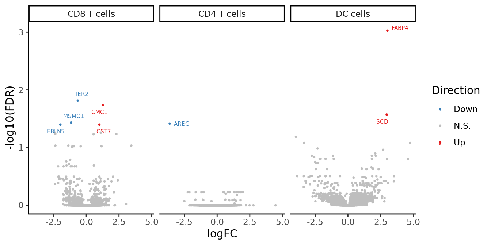
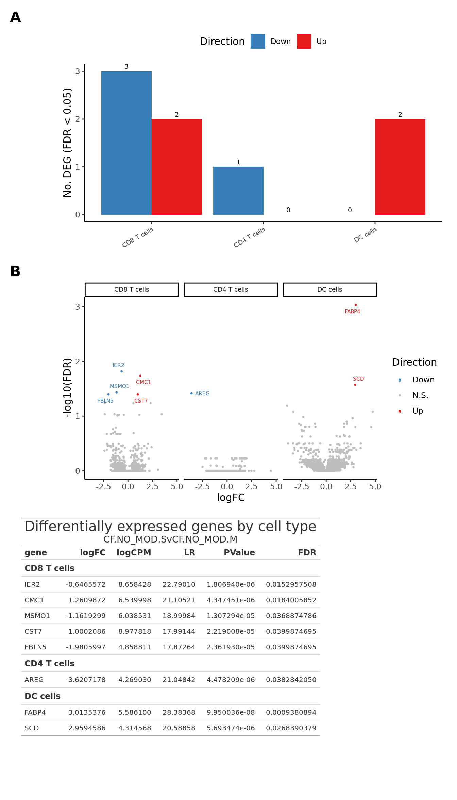

Supplementary Figure
CD4/8 T and DC cells: DGE analysis of CF status
Jovana Maksimovic
January 08, 2025
Last updated: 2025-01-08
Checks: 7 0
Knit directory: paed-inflammation-CITEseq/
This reproducible R Markdown analysis was created with workflowr (version 1.7.1). The Checks tab describes the reproducibility checks that were applied when the results were created. The Past versions tab lists the development history.
Great! Since the R Markdown file has been committed to the Git repository, you know the exact version of the code that produced these results.
Great job! The global environment was empty. Objects defined in the global environment can affect the analysis in your R Markdown file in unknown ways. For reproduciblity it’s best to always run the code in an empty environment.
The command set.seed(20240216) was run prior to running
the code in the R Markdown file. Setting a seed ensures that any results
that rely on randomness, e.g. subsampling or permutations, are
reproducible.
Great job! Recording the operating system, R version, and package versions is critical for reproducibility.
Nice! There were no cached chunks for this analysis, so you can be confident that you successfully produced the results during this run.
Great job! Using relative paths to the files within your workflowr project makes it easier to run your code on other machines.
Great! You are using Git for version control. Tracking code development and connecting the code version to the results is critical for reproducibility.
The results in this page were generated with repository version a3056e0. See the Past versions tab to see a history of the changes made to the R Markdown and HTML files.
Note that you need to be careful to ensure that all relevant files for
the analysis have been committed to Git prior to generating the results
(you can use wflow_publish or
wflow_git_commit). workflowr only checks the R Markdown
file, but you know if there are other scripts or data files that it
depends on. Below is the status of the Git repository when the results
were generated:
Ignored files:
Ignored: .Rhistory
Ignored: .Rproj.user/
Ignored: analysis/obsolete/
Ignored: data/C133_Neeland_batch1/
Ignored: data/C133_Neeland_merged/
Ignored: output/dge_analysis/obsolete/
Ignored: renv/library/
Ignored: renv/staging/
Untracked files:
Untracked: broad_markers_seurat.csv
Untracked: code/background_job.R
Untracked: code/reverse_modifier_severity_comparisons.sh
Untracked: data/intermediate_objects/CD4 T cells.CF_samples.fit.rds
Untracked: data/intermediate_objects/CD4 T cells.all_samples.fit.rds
Untracked: data/intermediate_objects/CD8 T cells.CF_samples.fit.rds
Untracked: data/intermediate_objects/CD8 T cells.all_samples.fit.rds
Untracked: data/intermediate_objects/DC cells.CF_samples.fit.rds
Untracked: data/intermediate_objects/DC cells.all_samples.fit.rds
Unstaged changes:
Modified: .gitignore
Modified: analysis/06.0_azimuth_annotation.Rmd
Modified: analysis/09.0_integrate_cluster_macro_cells.Rmd
Modified: analysis/13.1_DGE_analysis_macro-alveolar.Rmd
Modified: analysis/13.7_DGE_analysis_macro-proliferating.Rmd
Modified: analysis/99.0_Figure_4.Rmd
Modified: code/utility.R
Modified: data/intermediate_objects/macro-APOC2+.CF_samples.fit.rds
Modified: data/intermediate_objects/macro-APOC2+.all_samples.fit.rds
Modified: data/intermediate_objects/macro-CCL.CF_samples.fit.rds
Modified: data/intermediate_objects/macro-CCL.all_samples.fit.rds
Modified: data/intermediate_objects/macro-IFI27.CF_samples.fit.rds
Modified: data/intermediate_objects/macro-IFI27.all_samples.fit.rds
Modified: data/intermediate_objects/macro-alveolar.CF_samples.fit.rds
Modified: data/intermediate_objects/macro-alveolar.all_samples.fit.rds
Modified: data/intermediate_objects/macro-lipid.CF_samples.fit.rds
Modified: data/intermediate_objects/macro-lipid.all_samples.fit.rds
Modified: data/intermediate_objects/macro-monocyte-derived.CF_samples.fit.rds
Modified: data/intermediate_objects/macro-monocyte-derived.all_samples.fit.rds
Modified: data/intermediate_objects/macro-proliferating.CF_samples.fit.rds
Modified: data/intermediate_objects/macro-proliferating.all_samples.fit.rds
Modified: data/intermediate_objects/macrophages.CF_samples.fit.rds
Modified: data/intermediate_objects/macrophages.all_samples.fit.rds
Note that any generated files, e.g. HTML, png, CSS, etc., are not included in this status report because it is ok for generated content to have uncommitted changes.
These are the previous versions of the repository in which changes were
made to the R Markdown
(analysis/99.0_Supplementary_Figure_3-5.Rmd) and HTML
(docs/99.0_Supplementary_Figure_3-5.html) files. If you’ve
configured a remote Git repository (see ?wflow_git_remote),
click on the hyperlinks in the table below to view the files as they
were in that past version.
| File | Version | Author | Date | Message |
|---|---|---|---|---|
| Rmd | a3056e0 | Jovana Maksimovic | 2025-01-08 | wflow_publish("analysis/99.0_Supplementary_Figure_3-5.Rmd") |
Load libraries.
suppressPackageStartupMessages({
library(SingleCellExperiment)
library(edgeR)
library(tidyverse)
library(ggplot2)
library(Seurat)
library(glmGamPoi)
library(dittoSeq)
library(here)
library(clustree)
library(patchwork)
library(AnnotationDbi)
library(org.Hs.eg.db)
library(glue)
library(speckle)
library(tidyHeatmap)
library(paletteer)
library(dsb)
library(ggh4x)
library(readxl)
library(gt)
})
source(here("code/utility.R"))Load data
files <- list.files(here("data/C133_Neeland_merged"),
pattern = "C133_Neeland_full_clean.*(t_cells|other_cells)_annotated_diet.SEU.rds",
full.names = TRUE)
seuLst <- lapply(files, function(f) readRDS(f))
seu <- merge(seuLst[[1]],
y = seuLst[[2]])
seuAn object of class Seurat
19973 features across 29198 samples within 1 assay
Active assay: RNA (19973 features, 0 variable features) used (Mb) gc trigger (Mb) max used (Mb)
Ncells 11795865 630.0 20154902 1076.4 14066372 751.3
Vcells 138304387 1055.2 375191266 2862.5 328450633 2505.9Prepare figure panels
seu@meta.data %>%
data.frame %>%
dplyr::select(ann_level_1) %>%
group_by(ann_level_1) %>%
count() %>%
arrange(-n) %>%
dplyr::rename(cell = ann_level_1) -> cell_freq
cell_freq# A tibble: 14 × 2
# Groups: cell [14]
cell n
<chr> <int>
1 CD8 T cells 7268
2 CD4 T cells 5482
3 DC cells 4094
4 B cells 3769
5 monocytes 3225
6 epithelial cells 1847
7 innate lymphocyte 1481
8 NK cells 695
9 neutrophils 477
10 proliferating T/NK 250
11 gamma delta T cells 244
12 dividing innate cells 176
13 mast cells 99
14 NK-T cells 91files <- list.files(here("data/intermediate_objects"),
pattern = ".*all_samples",
full.names = TRUE)
files <- files[!str_detect(files, "macro")]
cutoff <- 0.05
cont_name <- "CF.NO_MODvNON_CF.CTRL"
lfc_cutoff <- 0
suffix <- ".all_samples.fit.rds"
get_deg_data(files, cont_name, cell_freq, treat_lfc = lfc_cutoff,
suffix = suffix) -> datZero log2-FC threshold detected. Switch to glmLRT() instead.
Zero log2-FC threshold detected. Switch to glmLRT() instead.
Zero log2-FC threshold detected. Switch to glmLRT() instead. bind_rows(lapply(files, function(f){
deg_results <- readRDS(f)
lrt <- glmLRT(deg_results$fit,
contrast = deg_results$contr[,cont_name])
tmp <- cbind(summary(decideTests(lrt, p.value = cutoff)) %>% data.frame,
cell = unlist(str_split(str_remove(f, suffix), "/"))[8])
tmp
})) -> dat_degdat_deg %>%
left_join(cell_freq) -> dat_deg
pal_dt <- c(paletteer::paletteer_d("RColorBrewer::Set1")[2:1], "grey")
dat_deg %>%
dplyr::filter(Var1 != "NotSig") %>%
ggplot(aes(x = fct_reorder(cell, -n), y = Freq, fill = Var1)) +
geom_col(position = "dodge") +
scale_fill_manual(values = pal_dt) +
theme_classic() +
theme(axis.text.x = element_text(angle = 30,
hjust = 1,
vjust = 1,
size = 7),
legend.position = "top") +
geom_text(aes(label = Freq),
position = position_dodge(width = 0.9),
vjust = -0.5,
size = 2.5) +
labs(x = "Cell Type",
y = "No. DEG (FDR < 0.05)",
fill = "Direction") -> deg_barplot
deg_barplot
get_deg_data(files, cont_name, cell_freq, treat_lfc = lfc_cutoff,
suffix = suffix, cutoff = 1) -> dat_allZero log2-FC threshold detected. Switch to glmLRT() instead.
Zero log2-FC threshold detected. Switch to glmLRT() instead.
Zero log2-FC threshold detected. Switch to glmLRT() instead. dat_all %>%
left_join(cell_freq) %>%
mutate(Direction = as.factor(ifelse(sig == -1, "Down",
ifelse(sig == 1, "Up", "N.S."))),
cell = fct_reorder(cell, -n)) -> dat_all
ggplot(dat_all, aes(x = logFC, y = -log10(FDR), colour = Direction)) +
geom_point(size = 0.5) +
facet_wrap(~cell, ncol = 4) +
theme_classic() +
scale_color_manual(values = pal_dt[c(1,3,2)]) +
ggrepel::geom_text_repel(data = dat_all[dat_all$sig != 0,],
aes(label = gene), size = 2) -> volc_plot
volc_plot
dat_all %>%
dplyr::select(-sig, -n, -Direction) %>%
dplyr::filter(FDR < cutoff) %>%
group_by(cell) %>%
arrange(PValue, .by_group = TRUE) %>%
gt() %>%
tab_header(title = "Differentially expressed genes by cell type",
subtitle = cont_name) %>%
tab_style(cell_text(size = px(10)),
locations = list(cells_body())) %>%
tab_style(cell_text(size = px(12), weight = "bold"),
locations = list(cells_column_labels())) %>%
tab_style(cell_text(size = px(12), weight = "bold"),
locations = list(cells_row_groups())) -> tab
tab| Differentially expressed genes by cell type | |||||
| CF.NO_MODvNON_CF.CTRL | |||||
| gene | logFC | logCPM | LR | PValue | FDR |
|---|---|---|---|---|---|
| CD8 T cells | |||||
| ADGRG1 | 2.5021012 | 4.466645 | 24.19243 | 8.717442e-07 | 0.00758679 |
| SULF2 | -1.9413497 | 4.396383 | 21.06761 | 4.433591e-06 | 0.01467086 |
| CTSB | 1.7399768 | 5.731016 | 20.81551 | 5.057172e-06 | 0.01467086 |
| ANKRD36C | 1.1218820 | 5.875441 | 18.48672 | 1.710926e-05 | 0.03411823 |
| REL | 0.8640961 | 6.809838 | 18.22763 | 1.960142e-05 | 0.03411823 |
| DC cells | |||||
| CEACAM4 | 2.2610736 | 4.072314 | 21.02323 | 4.537474e-06 | 0.02775101 |
| SLC16A10 | 2.9741874 | 6.331395 | 20.45649 | 6.100236e-06 | 0.02775101 |
| ALDH1A2 | 4.8973876 | 4.276887 | 19.76101 | 8.775486e-06 | 0.02775101 |
| TGM2 | 3.6728039 | 5.302445 | 19.14835 | 1.209417e-05 | 0.02868435 |
| CCL5 | 3.3089485 | 4.416919 | 17.83687 | 2.406746e-05 | 0.04566559 |
Supplementary Figure 3
layout <- "
A
B
C
"
(wrap_elements(deg_barplot + theme(axis.title.x = element_blank(),
legend.text = element_text(size = 8)))) +
wrap_elements(volc_plot + theme(strip.text = element_text(size = 7))) +
wrap_table(tab, ignore_tag = TRUE) +
plot_layout(design = layout) +
plot_annotation(tag_levels = "A") &
theme(plot.tag = element_text(size = 16,
face = "bold",
family = "arial"))
Prepare figure panels
seu@meta.data %>%
data.frame %>%
dplyr::select(ann_level_1) %>%
group_by(ann_level_1) %>%
count() %>%
arrange(-n) %>%
dplyr::rename(cell = ann_level_1) -> cell_freq
cell_freq# A tibble: 14 × 2
# Groups: cell [14]
cell n
<chr> <int>
1 CD8 T cells 7268
2 CD4 T cells 5482
3 DC cells 4094
4 B cells 3769
5 monocytes 3225
6 epithelial cells 1847
7 innate lymphocyte 1481
8 NK cells 695
9 neutrophils 477
10 proliferating T/NK 250
11 gamma delta T cells 244
12 dividing innate cells 176
13 mast cells 99
14 NK-T cells 91files <- list.files(here("data/intermediate_objects"),
pattern = ".*CF_samples",
full.names = TRUE)
files <- files[!str_detect(files, "macro")]
cutoff <- 0.05
cont_name <- "CF.NO_MOD.SvCF.NO_MOD.M"
lfc_cutoff <- 0
suffix <- ".CF_samples.fit.rds"
get_deg_data(files, cont_name, cell_freq, treat_lfc = lfc_cutoff,
suffix = suffix) -> datZero log2-FC threshold detected. Switch to glmLRT() instead.
Zero log2-FC threshold detected. Switch to glmLRT() instead.
Zero log2-FC threshold detected. Switch to glmLRT() instead. bind_rows(lapply(files, function(f){
deg_results <- readRDS(f)
lrt <- glmLRT(deg_results$fit,
contrast = deg_results$contr[,cont_name])
tmp <- cbind(summary(decideTests(lrt, p.value = cutoff)) %>% data.frame,
cell = unlist(str_split(str_remove(f, suffix), "/"))[8])
tmp
})) -> dat_degdat_deg %>%
left_join(cell_freq) -> dat_deg
pal_dt <- c(paletteer::paletteer_d("RColorBrewer::Set1")[2:1], "grey")
dat_deg %>%
dplyr::filter(Var1 != "NotSig") %>%
ggplot(aes(x = fct_reorder(cell, -n), y = Freq, fill = Var1)) +
geom_col(position = "dodge") +
scale_fill_manual(values = pal_dt) +
theme_classic() +
theme(axis.text.x = element_text(angle = 30,
hjust = 1,
vjust = 1,
size = 7),
legend.position = "top") +
geom_text(aes(label = Freq),
position = position_dodge(width = 0.9),
vjust = -0.5,
size = 2.5) +
labs(x = "Cell Type",
y = "No. DEG (FDR < 0.05)",
fill = "Direction") -> deg_barplot
deg_barplot
get_deg_data(files, cont_name, cell_freq, treat_lfc = lfc_cutoff,
suffix = suffix, cutoff = 1) -> dat_allZero log2-FC threshold detected. Switch to glmLRT() instead.
Zero log2-FC threshold detected. Switch to glmLRT() instead.
Zero log2-FC threshold detected. Switch to glmLRT() instead. dat_all %>%
left_join(cell_freq) %>%
mutate(Direction = as.factor(ifelse(sig == -1, "Down",
ifelse(sig == 1, "Up", "N.S."))),
cell = fct_reorder(cell, -n)) -> dat_all
ggplot(dat_all, aes(x = logFC, y = -log10(FDR), colour = Direction)) +
geom_point(size = 0.5) +
facet_wrap(~cell, ncol = 4) +
theme_classic() +
scale_color_manual(values = pal_dt[c(1,3,2)]) +
ggrepel::geom_text_repel(data = dat_all[dat_all$sig != 0,],
aes(label = gene), size = 2) -> volc_plot
volc_plot
dat_all %>%
dplyr::select(-sig, -n, -Direction) %>%
dplyr::filter(FDR < cutoff) %>%
group_by(cell) %>%
arrange(PValue, .by_group = TRUE) %>%
gt() %>%
tab_header(title = "Differentially expressed genes by cell type",
subtitle = cont_name) %>%
tab_style(cell_text(size = px(10)),
locations = list(cells_body())) %>%
tab_style(cell_text(size = px(12), weight = "bold"),
locations = list(cells_column_labels())) %>%
tab_style(cell_text(size = px(12), weight = "bold"),
locations = list(cells_row_groups())) -> tab
tab| Differentially expressed genes by cell type | |||||
| CF.NO_MOD.SvCF.NO_MOD.M | |||||
| gene | logFC | logCPM | LR | PValue | FDR |
|---|---|---|---|---|---|
| CD8 T cells | |||||
| IER2 | -0.6465572 | 8.658428 | 22.79010 | 1.806940e-06 | 0.0152957508 |
| CMC1 | 1.2609872 | 6.539998 | 21.10521 | 4.347451e-06 | 0.0184005852 |
| MSMO1 | -1.1619299 | 6.038531 | 18.99984 | 1.307294e-05 | 0.0368874786 |
| CST7 | 1.0002086 | 8.977818 | 17.99144 | 2.219008e-05 | 0.0399874695 |
| FBLN5 | -1.9805997 | 4.858811 | 17.87264 | 2.361930e-05 | 0.0399874695 |
| CD4 T cells | |||||
| AREG | -3.6207178 | 4.269030 | 21.04842 | 4.478209e-06 | 0.0382842050 |
| DC cells | |||||
| FABP4 | 3.0135376 | 5.586100 | 28.38368 | 9.950036e-08 | 0.0009380894 |
| SCD | 2.9594586 | 4.314568 | 20.58858 | 5.693474e-06 | 0.0268390379 |
Supplementary Figure 5
layout <- "
A
B
C
"
(wrap_elements(deg_barplot + theme(axis.title.x = element_blank(),
legend.text = element_text(size = 8)))) +
wrap_elements(volc_plot + theme(strip.text = element_text(size = 7))) +
wrap_table(tab, ignore_tag = TRUE) +
plot_layout(design = layout) +
plot_annotation(tag_levels = "A") &
theme(plot.tag = element_text(size = 16,
face = "bold",
family = "arial"))
Session info
sessionInfo()R version 4.3.3 (2024-02-29)
Platform: x86_64-pc-linux-gnu (64-bit)
Running under: Ubuntu 22.04.4 LTS
Matrix products: default
BLAS: /usr/lib/x86_64-linux-gnu/openblas-pthread/libblas.so.3
LAPACK: /usr/lib/x86_64-linux-gnu/openblas-pthread/libopenblasp-r0.3.20.so; LAPACK version 3.10.0
locale:
[1] LC_CTYPE=en_AU.UTF-8 LC_NUMERIC=C
[3] LC_TIME=en_AU.UTF-8 LC_COLLATE=en_AU.UTF-8
[5] LC_MONETARY=en_AU.UTF-8 LC_MESSAGES=en_AU.UTF-8
[7] LC_PAPER=en_AU.UTF-8 LC_NAME=C
[9] LC_ADDRESS=C LC_TELEPHONE=C
[11] LC_MEASUREMENT=en_AU.UTF-8 LC_IDENTIFICATION=C
time zone: Etc/UTC
tzcode source: system (glibc)
attached base packages:
[1] stats4 stats graphics grDevices datasets utils methods
[8] base
other attached packages:
[1] gt_0.11.1 readxl_1.4.3
[3] ggh4x_0.2.8 dsb_1.0.3
[5] paletteer_1.6.0 tidyHeatmap_1.8.1
[7] speckle_1.2.0 glue_1.8.0
[9] org.Hs.eg.db_3.18.0 AnnotationDbi_1.64.1
[11] patchwork_1.3.0 clustree_0.5.1
[13] ggraph_2.2.0 here_1.0.1
[15] dittoSeq_1.14.2 glmGamPoi_1.14.3
[17] SeuratObject_4.1.4 Seurat_4.4.0
[19] lubridate_1.9.3 forcats_1.0.0
[21] stringr_1.5.1 dplyr_1.1.4
[23] purrr_1.0.2 readr_2.1.5
[25] tidyr_1.3.1 tibble_3.2.1
[27] ggplot2_3.5.0 tidyverse_2.0.0
[29] edgeR_4.0.15 limma_3.58.1
[31] SingleCellExperiment_1.24.0 SummarizedExperiment_1.32.0
[33] Biobase_2.62.0 GenomicRanges_1.54.1
[35] GenomeInfoDb_1.38.6 IRanges_2.36.0
[37] S4Vectors_0.40.2 BiocGenerics_0.48.1
[39] MatrixGenerics_1.14.0 matrixStats_1.2.0
[41] workflowr_1.7.1
loaded via a namespace (and not attached):
[1] fs_1.6.5 spatstat.sparse_3.0-3 bitops_1.0-7
[4] httr_1.4.7 RColorBrewer_1.1-3 doParallel_1.0.17
[7] tools_4.3.3 sctransform_0.4.1 utf8_1.2.4
[10] R6_2.5.1 lazyeval_0.2.2 uwot_0.1.16
[13] GetoptLong_1.0.5 withr_3.0.0 sp_2.1-3
[16] gridExtra_2.3 progressr_0.14.0 cli_3.6.3
[19] spatstat.explore_3.2-6 labeling_0.4.3 prismatic_1.1.1
[22] sass_0.4.9 spatstat.data_3.0-4 ggridges_0.5.6
[25] pbapply_1.7-2 parallelly_1.37.0 rstudioapi_0.15.0
[28] RSQLite_2.3.5 generics_0.1.3 shape_1.4.6
[31] ica_1.0-3 spatstat.random_3.2-2 dendextend_1.17.1
[34] Matrix_1.6-5 fansi_1.0.6 abind_1.4-5
[37] lifecycle_1.0.4 whisker_0.4.1 yaml_2.3.8
[40] SparseArray_1.2.4 Rtsne_0.17 grid_4.3.3
[43] blob_1.2.4 promises_1.2.1 crayon_1.5.2
[46] miniUI_0.1.1.1 lattice_0.22-5 cowplot_1.1.3
[49] KEGGREST_1.42.0 pillar_1.9.0 knitr_1.45
[52] ComplexHeatmap_2.18.0 rjson_0.2.21 future.apply_1.11.1
[55] codetools_0.2-19 leiden_0.4.3.1 getPass_0.2-4
[58] data.table_1.15.0 vctrs_0.6.5 png_0.1-8
[61] cellranger_1.1.0 gtable_0.3.4 rematch2_2.1.2
[64] cachem_1.0.8 xfun_0.42 S4Arrays_1.2.0
[67] mime_0.12 tidygraph_1.3.1 survival_3.7-0
[70] pheatmap_1.0.12 iterators_1.0.14 statmod_1.5.0
[73] ellipsis_0.3.2 fitdistrplus_1.1-11 ROCR_1.0-11
[76] nlme_3.1-164 bit64_4.0.5 RcppAnnoy_0.0.22
[79] rprojroot_2.0.4 bslib_0.6.1 irlba_2.3.5.1
[82] KernSmooth_2.23-24 colorspace_2.1-0 DBI_1.2.1
[85] tidyselect_1.2.1 processx_3.8.3 bit_4.0.5
[88] compiler_4.3.3 git2r_0.33.0 xml2_1.3.6
[91] DelayedArray_0.28.0 plotly_4.10.4 scales_1.3.0
[94] lmtest_0.9-40 callr_3.7.3 digest_0.6.34
[97] goftest_1.2-3 spatstat.utils_3.0-4 rmarkdown_2.25
[100] XVector_0.42.0 htmltools_0.5.8.1 pkgconfig_2.0.3
[103] highr_0.10 fastmap_1.1.1 rlang_1.1.4
[106] GlobalOptions_0.1.2 htmlwidgets_1.6.4 shiny_1.8.0
[109] farver_2.1.1 jquerylib_0.1.4 zoo_1.8-12
[112] jsonlite_1.8.8 mclust_6.1 RCurl_1.98-1.14
[115] magrittr_2.0.3 GenomeInfoDbData_1.2.11 munsell_0.5.0
[118] Rcpp_1.0.12 viridis_0.6.5 reticulate_1.35.0
[121] stringi_1.8.3 zlibbioc_1.48.0 MASS_7.3-60.0.1
[124] plyr_1.8.9 parallel_4.3.3 listenv_0.9.1
[127] ggrepel_0.9.5 deldir_2.0-2 Biostrings_2.70.2
[130] graphlayouts_1.1.0 splines_4.3.3 tensor_1.5
[133] hms_1.1.3 circlize_0.4.15 locfit_1.5-9.8
[136] ps_1.7.6 igraph_2.0.1.1 spatstat.geom_3.2-8
[139] reshape2_1.4.4 evaluate_0.23 renv_1.0.3
[142] BiocManager_1.30.22 tzdb_0.4.0 foreach_1.5.2
[145] tweenr_2.0.3 httpuv_1.6.14 RANN_2.6.1
[148] polyclip_1.10-6 future_1.33.1 clue_0.3-65
[151] scattermore_1.2 ggforce_0.4.2 xtable_1.8-4
[154] later_1.3.2 viridisLite_0.4.2 memoise_2.0.1
[157] cluster_2.1.6 timechange_0.3.0 globals_0.16.2